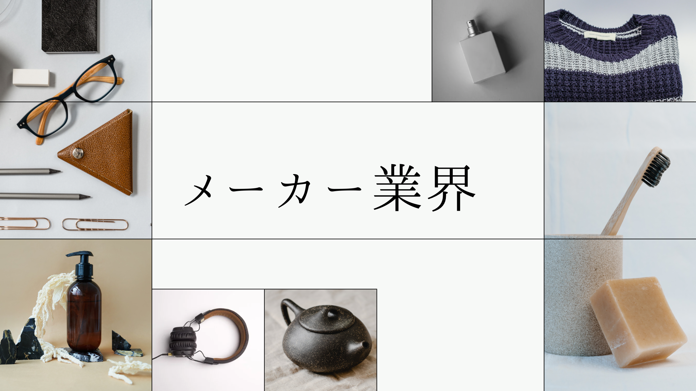

自己分析ワーク・社員座談会

キーエンスの選考体験記
インターン（ジョブ）
| 開催時期/実施日数 | 10/15 半日 |
|---|
内容
注意した点・感想
学生同士が仲良くなれるような自己分析ワークと、働き方についての理解が深まる職種説明と質問タイムがあった。ワークは学生40人ほどに対して１人の人事がたまに様子を見に来る程度でメモをとる様子もないため、選考要素はないと思われる。後半の説明会を通してキーエンスへのブラックなイメージがなくなり、仕事内容への興味をもった。
選考への影響
選考要素はない。インターンに参加する前にテストセンターと15分ほどの面接がある。インターンに参加した全員が早期選考に参加することができる。早期選考は一次面接が免除されるが、インターンに参加していない人の1次面接も15分である。インターン参加者は12月中旬くらいに選考説明会があり、そこに参加することが条件。
ESというより面接前の基本事項記入シート（フェイスシート)
| 提出期日/提出方法 | １月上旬/マイページ |
|---|---|
| 結果通知時期/通知方法 | ２週間以内/マイページ |
質問１：あなたの選社軸
挑戦できる環境
質問２：研究の目的・概要
---
質問３：時間を忘れて没頭すること
テニス
注意した点
ESも選考要素があるというより基本的事項の確認と面接のネタに使われるだけである。ただ、なぜそれを選んだのかなどについて後々聞かれることがあるのでしっかり考えて記入することが大切。
マッチング面談
| 面接時期 | 1/19 |
|---|---|
| 面接時間 | 30分 |
| 結果通知時期/方法 | 1か月以内にマイページ |
面接官の人数・役職/学生の人数
1対１でオンライン
エンジニア職でも、CEにエントリーする人間のみのための面談。
エンジニア職でも、CEにエントリーする人間のみのための面談。
質問内容
自分の性格について。趣味の話。
注意した点・感想
職種が本人にあっているかどうかの面談である。合わないと思われた場合は、他の職種の選考フローに移される。
二次面接
| 面接時期 | 2/18 |
|---|---|
| 面接時間 | 40分 |
| 結果通知時期/方法 | 1か月以内にマイページ |
面接官の人数・役職/学生の人数
2人・中堅社員、対面、面接の様子が録画される。
内容（テーマ・プレゼン時間など）
これまでの経歴
自身の性格について（周りからどう言われるか、自分ではどう思うか、なぜそう思うのか、それに関連するエピソード）
ケース問題（ある商品を扱う会社で売り上げを1年間で20%伸ばすには？）
自分の受ける職種をどう理解しているか
商品名が書いてあるカードを２枚引いて、どちらか好きな方を選び、その商品の売上を、マーケットシェア10%から20%に、今年中に上げる手法を提案させられる。思考時間は30秒くらい。ちなみに私は冷蔵庫と電動自転車で、冷蔵庫を選びました。
私は○○が苦手ですが、どうしたら良いと思いますか？（○○は忘れた、、）
就活の軸
強みと弱みについて
この面接で良かった部分と悪かった部分を振り返ってください
自身の性格について（周りからどう言われるか、自分ではどう思うか、なぜそう思うのか、それに関連するエピソード）
ケース問題（ある商品を扱う会社で売り上げを1年間で20%伸ばすには？）
自分の受ける職種をどう理解しているか
商品名が書いてあるカードを２枚引いて、どちらか好きな方を選び、その商品の売上を、マーケットシェア10%から20%に、今年中に上げる手法を提案させられる。思考時間は30秒くらい。ちなみに私は冷蔵庫と電動自転車で、冷蔵庫を選びました。
私は○○が苦手ですが、どうしたら良いと思いますか？（○○は忘れた、、）
就活の軸
強みと弱みについて
この面接で良かった部分と悪かった部分を振り返ってください
注意した点・感想
終始三人で楽しく会話をしているような雰囲気だった。
ケース問題の時だけは少し雰囲気が代わりかたい印象を持ったが、その後は再び柔らかくなった。
基本的に笑顔でハキハキと答えるように心がけた。
ケース問題の時だけは少し雰囲気が代わりかたい印象を持ったが、その後は再び柔らかくなった。
基本的に笑顔でハキハキと答えるように心がけた。
対策イベント！
会社見学
| 形式 | オンライン |
|---|
内容
キーエンスの会社説明会と社員座談会。キーエンスの商品や魅力について教えてもらう。会社や働き方への理解が深まる。
選考との関係
必ず参加しなくてはならないが、選考要素は全くない。
最終面接
| 面接時期 | 3/15 |
|---|---|
| 面接時間 | 60分 |
| 面接官の人数・役職/学生の人数 | 面接官１人・中堅社員、対面 |
| 結果通知時期/方法 | 1か月以内に電話 |
内容（テーマ・プレゼン時間など）
面接直前に選社軸や将来像を記入する時間があり、これをもとに面接が進む。
両親はキーエンスを知っていますか、キーエンスを受けることについて何と言っていましたか？
幼少期から今までの経験、自分自身の性格や趣味について。
会社見学会の感想。
他社の選考状況、キーエンスと他社の志望度を数値化するとどれくらいか。
入社して不安なことなどの逆質問
両親はキーエンスを知っていますか、キーエンスを受けることについて何と言っていましたか？
幼少期から今までの経験、自分自身の性格や趣味について。
会社見学会の感想。
他社の選考状況、キーエンスと他社の志望度を数値化するとどれくらいか。
入社して不安なことなどの逆質問
注意した点・感想
今までの面接に比べこちらに合わせてくださる雰囲気で一番やりやすい面接だった。一対一で非常に和やかな雰囲気。会話の節々から人事の方の高いコミュニケーション能力が感じられる。
内定
| 内定時期 | 3/25 |
|---|---|
| 承諾検討期間 | 4/28 |
| 承諾or辞退 | 承諾 |
承諾or辞退理由
4/15東京のオフィスに呼んでもらい、3名の女性エンジニアと話す機会をもらった。そこで自分のロールモデルになるような人と出会ったため。また、ファーストキャリアでキーエンスを選んだ先輩社員のエピソードに共感したため。
内定者属性（大学とか文理とか）
エンジニア職：東京大学、京都大学、大阪大学などの理系院生
選考全体の感想
内定先に興味を持ったきっかけ
もともと機械系メーカーに興味をもっており、マイページに登録していました。しかし当時はエネルギー業界とIT業界が第一志望でした。インターンの案内を見て応募するか迷っていたところ、研究室の皆がインターンに応募していたから試しに応募してみようと思いました。
インターンに参加すると、もともと思っていた「キーエンスは激務でブラック」というイメージがなくなり、「効率重視なので、疲弊して社員のモチベーションが下がるようなことはやらない」という考えに納得しました。職種もまさに私が求めていたCE（コンサルティングエンジニア）があり、職種別採用をしていると知り、メーカーのなかでは第一志望になりました。
インターンに参加すると、もともと思っていた「キーエンスは激務でブラック」というイメージがなくなり、「効率重視なので、疲弊して社員のモチベーションが下がるようなことはやらない」という考えに納得しました。職種もまさに私が求めていたCE（コンサルティングエンジニア）があり、職種別採用をしていると知り、メーカーのなかでは第一志望になりました。
どういった基準でこの企業を選んだか
メーカー・IT・エネルギー業界に興味をもって就活していて各業界で一番ひかれた企業の本選考を受けていました。
そのときの軸は
「理系を活かせて人と接する機会の多い仕事」
「挑戦的な社風であり、明るく前向きな人が多い会社」
ということです。
・ITやエネルギー業界の他の迷っていた会社と比べて、
・入社後もキャリアの幅が広い（メーカーやコンサルなど）
・業績が良い、今後も伸びが期待できる（業界や会社の雰囲気が左右されると思う、縮小気味の会社より明るく働けそう）
・他社と比較しても挑戦的な社風である
と感じ、最も魅力的に感じました。
新卒でしか入ることができない（中途採用は少ない）という点も決め手になりました。
そのときの軸は
「理系を活かせて人と接する機会の多い仕事」
「挑戦的な社風であり、明るく前向きな人が多い会社」
ということです。
・ITやエネルギー業界の他の迷っていた会社と比べて、
・入社後もキャリアの幅が広い（メーカーやコンサルなど）
・業績が良い、今後も伸びが期待できる（業界や会社の雰囲気が左右されると思う、縮小気味の会社より明るく働けそう）
・他社と比較しても挑戦的な社風である
と感じ、最も魅力的に感じました。
新卒でしか入ることができない（中途採用は少ない）という点も決め手になりました。
選考を通して重要視されたと感じた点
事前に準備できるような質問が少なく、他社では聞かれないような質問が多かったため、「臨機応変に答えられるか」ということが重視されているように感じました。あとは「性格や考え方がキーエンスに合っているか」、「自分自身のことをよく理解できているか」という部分もかなり見られていたと思います。志望動機はほぼ聞かれなかったので重視していないと思います。
同業他社と比べてこの企業の魅力は？
【雰囲気】機械系のメーカーというと比較的おとなしい人が多いイメージですが、パワフルでよく話す人も多い印象です。私はある程度にぎやかな明るい雰囲気の会社で働きたいと考えていたので魅力的に感じました。
【待遇】同業他社と比べると労働時間は多いと思いますが、「時給換算しても比較的良い待遇」が特徴として挙げられると思います。利益を社員にしっかり還元することで社員のモチベーションを上げていると思います。
【勤務地】メーカーにしてはエンジニアは田舎勤務が少ないことも特徴だと思います。（だいたい新大阪の本社かお台場のオフィス）ある程度都会で働きたい人にとっては魅力的な点です。
【質の高い製品】キーエンスというと売るイメージが強いかもしれませんが、商品開発職の方々が高い技術力の商品を開発してくれています。自信をもって売ることができる商品を扱っていることは、仕事のやりがいに繋がると思います。
【メリハリのある働き方】21時半完全消灯、社用パソコン・スマホの社外持ち出し禁止でサービス残業ができない体制です。そのため、決められた時間のなかで成果を出すことが求められます。平均退社時間は20時半と遅めですが、休日は8~10日間の休みが年3回とれると聞きました。（本当かな…笑）
休日はしっかり遊ぶ人が多いらしく、メリハリのある働き方をしたい人にはおすすめです！
【待遇】同業他社と比べると労働時間は多いと思いますが、「時給換算しても比較的良い待遇」が特徴として挙げられると思います。利益を社員にしっかり還元することで社員のモチベーションを上げていると思います。
【勤務地】メーカーにしてはエンジニアは田舎勤務が少ないことも特徴だと思います。（だいたい新大阪の本社かお台場のオフィス）ある程度都会で働きたい人にとっては魅力的な点です。
【質の高い製品】キーエンスというと売るイメージが強いかもしれませんが、商品開発職の方々が高い技術力の商品を開発してくれています。自信をもって売ることができる商品を扱っていることは、仕事のやりがいに繋がると思います。
【メリハリのある働き方】21時半完全消灯、社用パソコン・スマホの社外持ち出し禁止でサービス残業ができない体制です。そのため、決められた時間のなかで成果を出すことが求められます。平均退社時間は20時半と遅めですが、休日は8~10日間の休みが年3回とれると聞きました。（本当かな…笑）
休日はしっかり遊ぶ人が多いらしく、メリハリのある働き方をしたい人にはおすすめです！
この企業を受けるにあたって工夫した点
ありのままの自分で挑むことです。高精度な性格検査があり、面接でも性格についての質問が多いので嘘をつくとボロがでるような気がします。
ただし「エネルギーに満ち溢れた人間」であることはアピールする必要があると思います！
ただし「エネルギーに満ち溢れた人間」であることはアピールする必要があると思います！
社員（と内定者）にどのような印象を持ったか
社員の方は効率よく仕事ができる人、明るい人、コミュニケーション力が高い人が多い印象があります。
自分も仕事を通してそんなふうになれたらいいなあと思いました。
内定者はほとんど交流がないのでまだ分かりません。
自分も仕事を通してそんなふうになれたらいいなあと思いました。
内定者はほとんど交流がないのでまだ分かりません。
後輩へのアドバイス
ESがほとんどなく、面接の準備もいらないので、興味がなくてもとりあえず受けてみることをおすすめします！
最終面接前の会社見学に参加したり、内定通知後に社員さんの話を聞いたりすることで興味が出てくるかもしれません！
最終面接前の会社見学に参加したり、内定通知後に社員さんの話を聞いたりすることで興味が出てくるかもしれません！